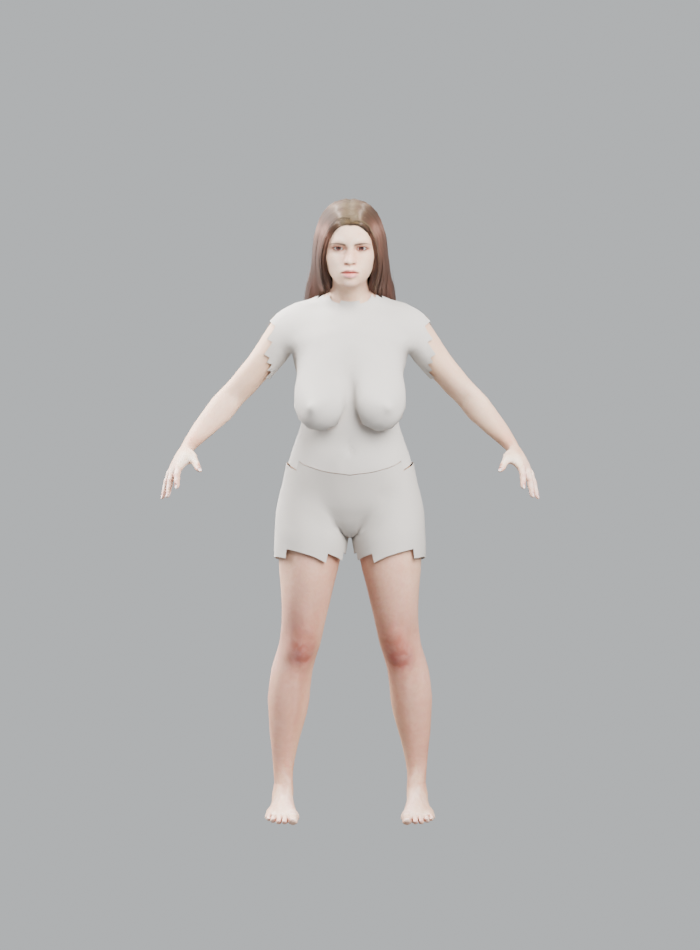

Drag to rotatePinch to zoom52-joint Mixamo skeletonTest GLB, not final Chrissy
Loading 3D character…
What this is: a real 3D MakeHuman/MPFB-generated reference trial based loosely on the approved blonde front/profile/back appearance. It has an articulated skeleton and a subtle test idle animation. The model has NOT been verified as a faithful match to Chrissy's face or exact dimensions, and it is not plugged into gameplay movement yet. The original Riley character and world data have not been changed.
Show offline preview render

If the model fails on a mobile browser, try refresh once or download the GLB and open it in a separate 3D viewer. Its approximate 15.7 MB size can take a moment on cellular data.